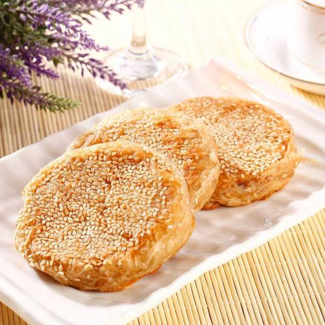

麻酱烧饼
麻酱烧饼，是一道常见面点。以面粉为饼，芝麻酱为馅。麻酱烧饼含有多种维生素及微量元素，特别适合三高人群食用。麻酱烧饼能延缓衰老、增加皮肤弹性、促进骨骼发育、预防头发脱落、润肠道。
芝麻能防止皮肤炎症、养血护肤、滋补养生、通便、促进骨骼发育、延年益寿、预防高血压、维护头发健康、素食者宜多食芝麻。
菜品特色
香脆可口，吃后齿颊留香。外焦里嫩，麻香味浓。
适用人群
重度肥胖者不宜食用、慢性肠炎者忌食、适合体质：气虚质、气郁质、血瘀质、平和质、不适合体质：湿热质、痰湿质
饮食小常识
麻酱烧饼北京人统称烧饼，是大众化的小吃品种。过去不少回民餐馆都经营此类面食，外皮多数带有芝麻，也有不带芝麻的，但不管表皮怎样，中间都是以涂麻酱为酥层的。回民小吃经常是品种配套供应，如豆汁配咸菜、焦圈，豆腐脑配麻酱烧饼，老豆腐配火烧，馅饼配小米粥，薄脆配牛舌饼。